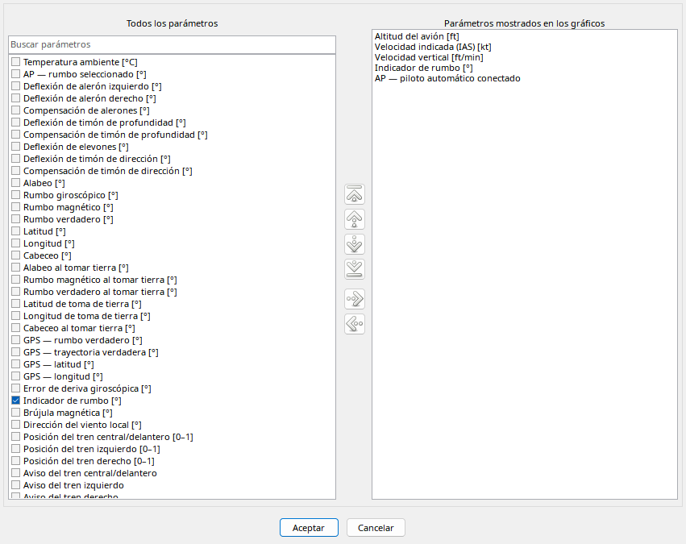

Izquierda contiene disponibles, derecha selección ordenada. La búsqueda filtra izquierda; vacíela para otras familias. Botones y arrastre entre listas muestran/ocultan.
Arriba/abajo e inicio/final ordenan la derecha. Ctrl-arrastrar cambia orden según destino. OK aplica y Cancelar descarta. La imagen usa el catálogo estándar completo, no cinco entradas; consulte el capítulo SimVar.
Separa parámetros disponibles y lista ordenada de visibles.
| Opción / acción | Funcionamiento y limitaciones |
|---|---|
| Buscar | Fragmento de nombre; vaciar restaura todos, sin borrar datos. |
| Mostrar / ocultar | Añade/quita solo de la presentación. |
| Arrastrar | Entre listas para mostrar/ocultar; solo destinos aceptados cambian selección. |
| Orden | Arriba/abajo/primero/último o Ctrl-arrastrar en visibles; insertar entre filas. |
| Aceptar / cancelar | Aplica o descarta los cambios del diálogo. |
